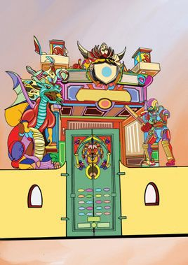
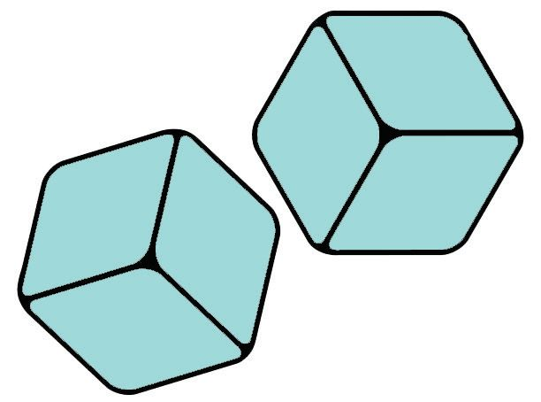
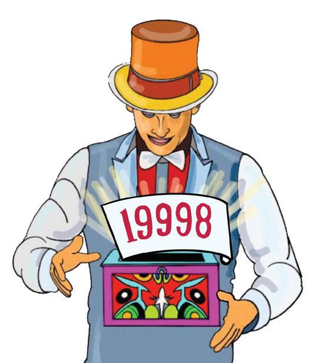
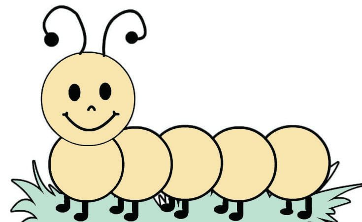
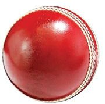

4
Increasing Numbers
Gicho Park


4
Increasing Numbers
Gicho Park


Mathematics
Standard - IV
Opening the door Dhwani went to Gicho Park with her mother and father. Her brother Dhanu is also with them.
Press two numbers with their sum 1000 to open the door.
Here’s the number with 500 and 10. 490 and 10 make 500. We need only 500 more.
490
210
752
900
100
537
765
422
404
449
450
300
207
450
596
793
235
248
550
510
1000
48
There’s a 100. What do we want next?


Increasing Numbers
Number Pairs Can you write the number pairs?
1000
1000 100
490
1000
1000 793
1000
1000
Sum 1000 Fill up the blanks to get sum 1000. 490 + 10 + 500 = 1000
800 + 100 + 100 = 1000
700 + 200 + 100 = ..........
490 + ........... = 1000
600 + 300 + 100 = .......... 793 + 7 + .......... = 1000
500 + 400 + ....... = 1000
400 + 300 + ....... = 1000
793 + .......... = 1000
551 + 9 + .......... = 1000
551 + .......... = 1000
600 + ...... + ....... = 1000 400 + ...... + ....... = 1000 500 + .......+ ....... = 1000
Complete the garland 9000 10000
49


Mathematics
Standard - IV
Shooting Corner Calculate the points for shooting and find the winner.
Three shots for each.
100
363 250
900
475 750
525
Write the points each got. Dhanu
:
100 + 900 + 525
=
Dhwani
:
750 + 250 + ........
= 1475
Mini got 1363 points in three shots. What are the possible numbers she hit? 363
Suhail hit 363 in all three shots. How many points did he get?
Have to add 363 three times.
Adding 300 and 60 and 3 three times is enough.
Twice 3 is 6 Double of 3 is 6.
50
Puzzle corner Who am I? I’m a three-digit number with all digits the same. Adding the number three times and adding 1 more gives the smallest fourdigit number. Who am I?

Increasing Numbers
Different Ways to Add • How do we add three 363’s? Methtod : 2 Methtod : 1 What if we multiply 300 by 3? 300 + 60 + 3 + Similarly, we can multiply 60 and 300 + 60 + 3 3 by 3. 300 + 60 + 3 900 + 180 + 9 900 + 100 + 89 = 1089
300 × 3 = 900 + 60 × 3 = 180 3 × 3 = 9 1089
(3 × 3 × 100 = 900) (3 × 6 × 10 = 180)
• Lini hit 363, 475 and 750. How many points did she get? Methtod : 1 363 + 475 + 750 363 + 475 = 300 + 60 + 3 + 400 + 70 + 5 = 300 + 400 + 60 + 70 + 3 + 5 = 700 + 130 + 8 = 830 + 8 = 838 838 + 750 = 800 + 30 + 8 + 700 + 50 = 800 + 700 + 30 + 50 + 8 = 1500 + 80 + 8 = 1588
It can be done in this way also! 363 + 475 838
Methtod : 2 363 + 475 + 750 300 + 60 + 3 1400 + 100 + 80 + 8 400 + 70 + 5 = 1500 + 88 700 + 50 = 1588 1400 +180 + 8
838 + 750 1588
363 + 475 750 1588
Who got the most points? Name of the winner Write the names of the players in order from the one with least points to the one with most points. , , , , What is the maximum points one can get in 3 shots? 51





Mathematics
Standard - IV
Curious 1089
• Write 3 consecutive digits. • Write the largest three digit number using all these. • Write the smallest. • Find their difference. • Reverse the digits of this number. • Add these two numbers.
Do you get the same number as the sum for any 3 digits? Try!
Dice Corner See these dice. We have to roll the four-digit dice and the three-digit once and add the numbers.
Shall we also play a dice game?
341 343 2351
2349
251
5123
Numbers Dhanu got on rolling the dice 2349
52
251
Dhanu gets the sum of 2349 and 251 as points.



Increasing Numbers
Dhanu’s points • How father calculated
• How mother calculated
2349 + 251 = 2000 + 349 + 251 = 2000 + 350 + 250 = 2600
2349 + 251 = 2349 + 1 + 250
= 2350 + 250 = 2600
• How Dhanu calculated 2349 + 251 = 2300 + 200 + 49 + 51 = 2500 + 100 = 2600
• How Dhwani calculated
2349 + 251 = 2000 + 300 + 40 + 9 +
200 + 50 + 1
2000 + 500 + 90 + 10 = 2600
Addition and Subtraction See how Dhwani added up the numbers she got from the dice. What numbers did she get? 1 235
0
5 44
5013 + ................... ................... + 343
= 5413
013
3102
434 343
= 4850
Dice 1
Dice 2
Sum
4450
400
2351
343 434
5123 341
5013
251
341
234 400
251
Fill Up
............ ............
5447 5357
2349
5123
5
= 3445
................. + .................
2349
............ ............
7050
5050
6050
53


Mathematics
Standard - IV
Sports Corner
1125 1190
325
2990
920
3500
3050
980
3600
They bought a bat and ball for Dhanu and a bicycle for Dhwani. The price of the bicycle
Father has 4000 rupees with him.
The price of the bat and ball The amount paid
What are all the ways by which the amount paid by father can be written as notes and coins?
How I calculated
54
How my friend calculated




Increasing Numbers
Magic Corner
Come... You can also do magic!I’ll tell you what to do.
Hey! Magic!
Instructions
• You write a four-digit number. • I’ll write a number and put it in the box. • Then I will write a number below yours. • Then you can write another four-digit number. • I’ll again write a four-digit number. • Then you add up all the four numbers. • Then I’ll show you the number I put in the box. Number Dhanu wrote
- 4325
Number magician wrote - 5674 Number Dhanu wrote
- 1408
Number magician wrote - 8591
See the sum and the number written and put in the box by the magician. What did you understand?
Sum What I found out
Isn’t it the number 2 less than 20000? 55


Mathematics
Standard - IV
Photo Corner Dhwani and Dhanu took their photos at the photo corner. Take a number on the butterfly, reverse its digits and add the two numbers.
4123
2321
32
2 00
21
23
31
41
14
4
Number Dhanu selected 4123 Reversing the digits 3214
How Dhanu calculated 4123 = 4000 + 100 + 20 + 3 3214 = 3000 + 200 + 10 + 4 7000 + 300 + 30 + 7 = 7337
56
4123 + 3214 = 7337
Number Dhwani chose = 4002 Reversed number = ......... Sum = .........



Increasing Numbers
Answer Blooms The sums got by reversing and adding the numbers on the butterfly are on the flowers. Colour them. Palindromic Numbers 8
844
6446 3553
533
5
7337
455
4
2112 6006
Numbers which are the same when read from left to right or right to left, are called palindromic numbers. Do we get a palindrome when we take any fourdigit number, reverse the digits and add to the original number? Write your findings in your notebook.
Let’s Find The Sum
2357 + 7532
5104 + 8432 + 4015 1569
6018 + 3294
3519 + 8482
57


Mathematics
Standard - IV
Game Corner Dhanu and Dhwani are playing a car racing game in the computer. See the points various players got. Points Scored Name Dhanu
Round Round 1 2 2143
1457
Dhwani
1148
2067
Nanma
1654
1188
Mini
1876
1124
What is the total number of points Dhanu scored?
Method - 1
Method - 2
2143 + 1457
2143 + 1457
2143 + 1000 = 3143
2143
= 2000 + 100 + 40 + 3
3143 + 400 = 3543
1457
= 1000 + 400 + 50 + 7
3543 +
50 = 3593
3000 + 500 + 90 + 10
3593 +
7 = 3600
= 3500 + 100 = 3600
Another way 2143 + 1457 3600
Can you guess who all got more than 3000 points in the car racing game? Guess and write down.
58


Increasing Numbers
Did You Guess Right? Points scored Name
Round 1
Round 2
Total
Dhanu
2143
1457
3600
Dhwani
1148
2067
Nanma
1654
1188
Mini
1876
1124
Bargain Sale See the notice
Reduced prices! 7200 Rs
2499 Rs
6500 Rs
9999 Rs 3800 Rs
5500 Rs
How much money is needed to buy a cot and a TV for Dhwani’s home? How much money for a TV and an almirah ? How much money for a washing machine and a cot? A person bought something from the shop and gave a sheaf of hundred 100 rupee notes and he got 1 rupee back. What did he buy?
5999 Rs
If you have 12000 rupees with you, what all things would you
buy? Write reasons also.
59





Mathematics
Standard - IV
Batting Corner Dhanu and Dhwani came to the batting corner. Each player can bat for three overs. Points are given after each over. See the points the three children got.
2343
Dhanu
2344
1465
Dhwani
3346 Prize Dragon Train ticket for total points more than 7000.
1592
Score card Name
Points scored
Dhanu Jincy Dhwani Who all won tickets for the Dragon Train? Find out and write.
60
3555
2600
3657 2279
Jincy
Total


Increasing Numbers
(1)
Calculate the sums and write in the circles.
To get the number in circle A, calculate 2850 + 1400.
2850
A
1400
A = ........... B = ........... C = ...........
B
C
D
D = ........... E = ...........
1875 (2)
3650
E
Write the next 5 numbers
4100, 5100, 6100, .............., .............., .............., .............., ..............
2352, 2852, 3332 , .............., .............., .............., .............., ..............
1000, 2111, 3222, .............., .............., .............., .............., ..............
2839, 3748, 4657, .............., .............., .............., .............., ..............
(3)
What is the number in the empty cell?
(A) 3000
(B) 2400
1500
1750
?
2050
(C) 2300
(D) 2150
61

Mathematics
Standard - IV
(4) Look at the shooting target and answer the questions below:
1 10 100 1000
• How many points would be scored, if one hits each of the circle once? • Dhwani hit the 1000-circle 3 times and the 10-circle 2 times. How many points did she get? • Dhanu shot 10 times and scored 5140. Which are the circles be hit and how many times each? • Among the numbers below, which can be the total score of 10 shots? (A) 5142
(B) 6280
(C) 4510
(D) 1245
• After many shots, one’s total score was 3333. What is the minimum shots he must have fired?
62